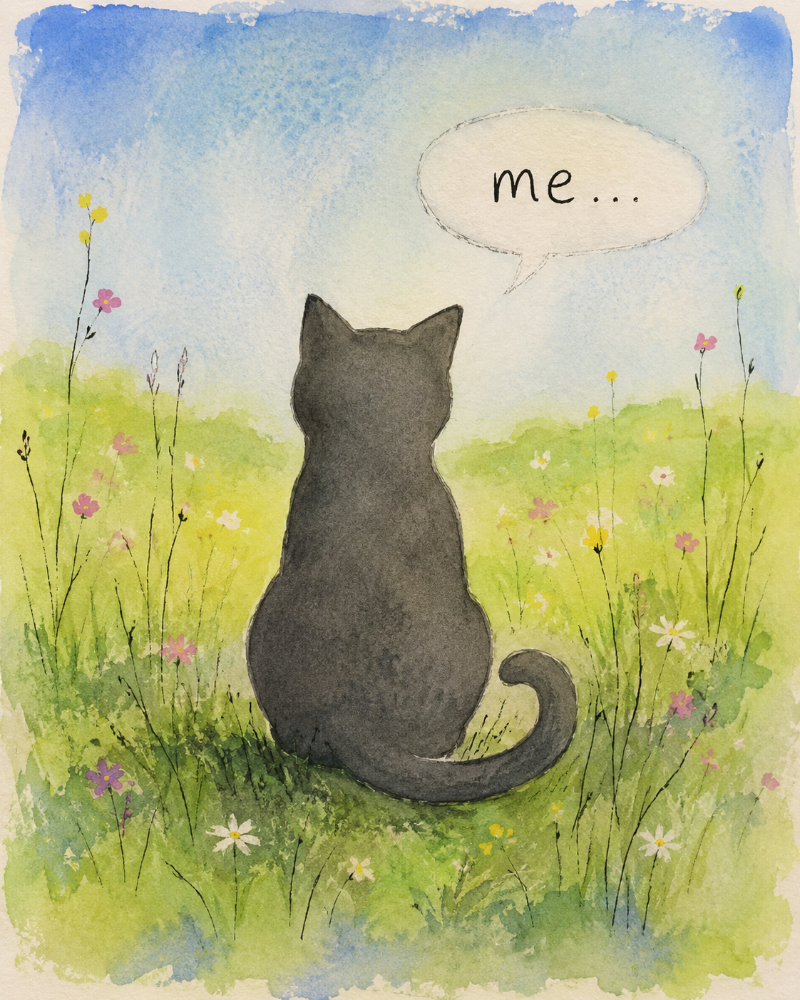
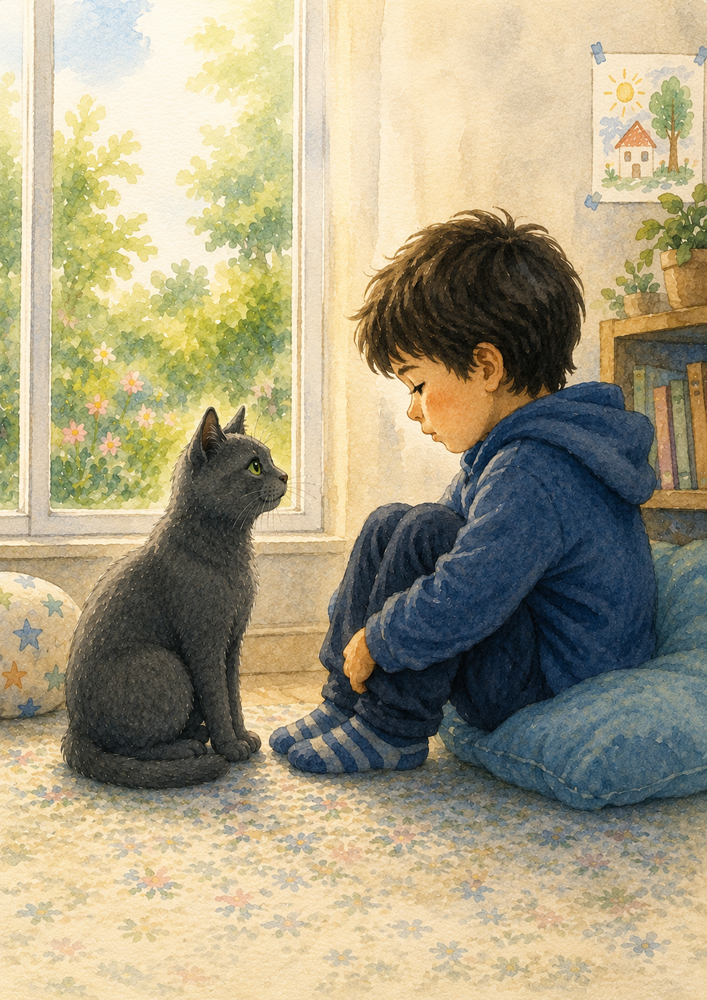
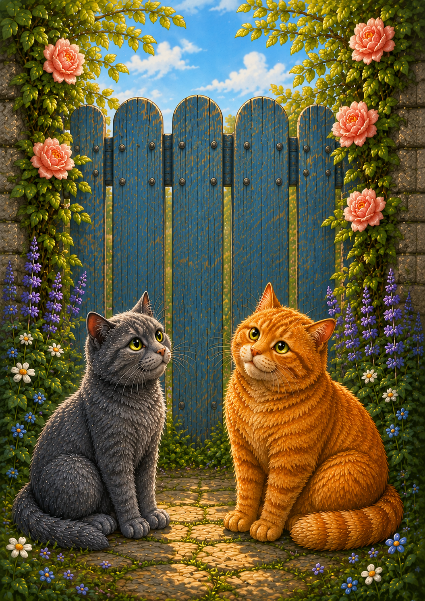
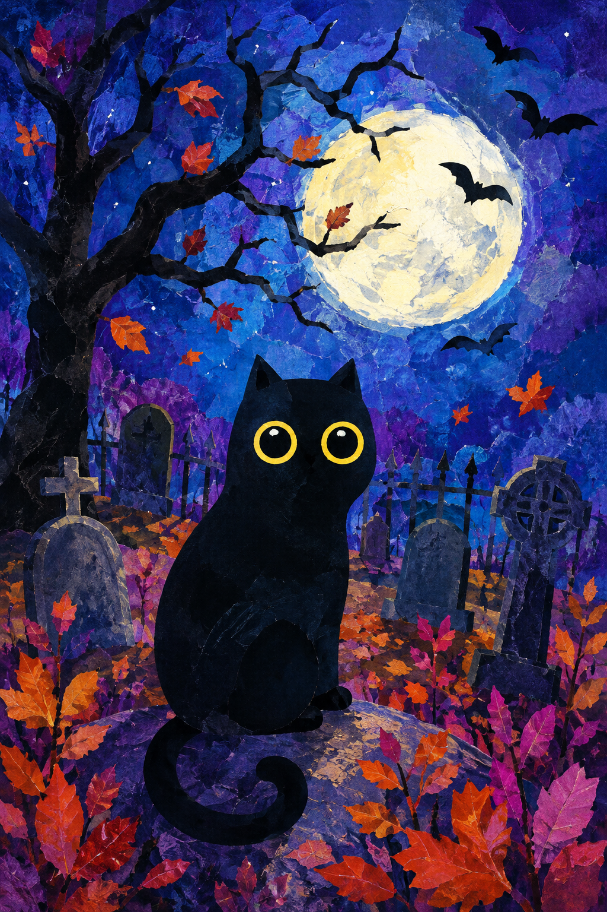

The Cat Who Forgot Its Meow
Sometimes finding where you belong can help you find your voice.
Read this storyA quiet digital bookshelf
Gentle stories about difference, friendship, understanding and belonging.
Choose a story below. You can adjust the font, text size and contrast at any time.

Sometimes finding where you belong can help you find your voice.
Read this story
Sometimes friendship begins by quietly waiting until someone is ready.
Read this story
Good friends help without making each other feel ashamed.
Read this storySometimes people do not need to be hurried. They need someone who understands.
Read this story
Sometimes the friends we meet for the shortest time leave the longest memories.
Read this storyYour choices are saved in this browser.